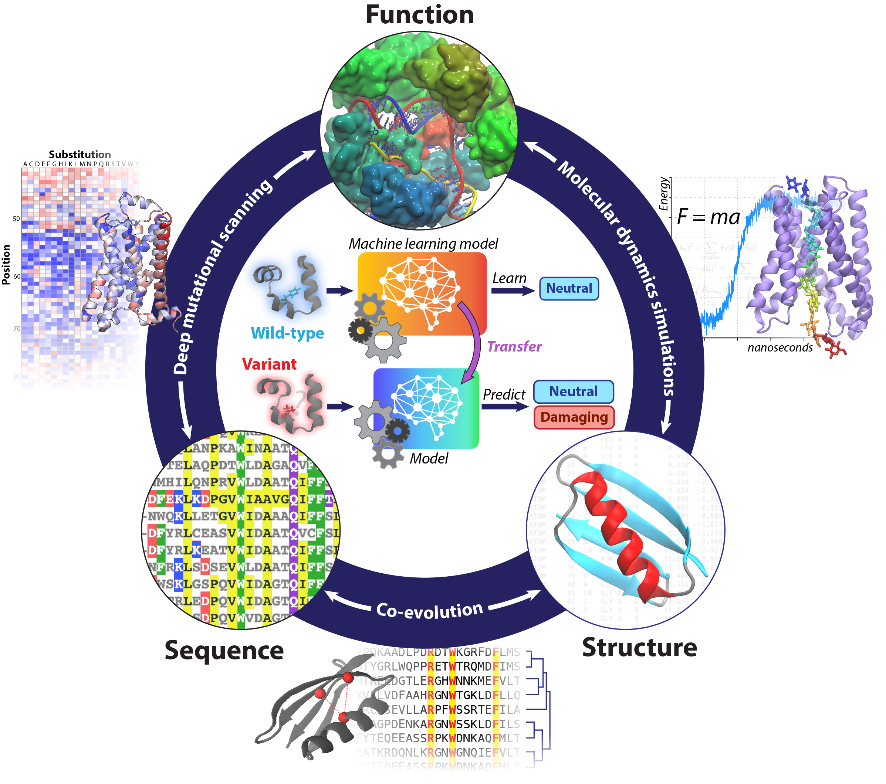

Conformational dynamics and regulation of neurotransmitter transporters
Neurotransmitters are important signaling molecules that regulate many bodily functions. Termination of the neuronal signaling is initated by the reuptake of neurotransmitters from the synaptic cleft via specalized membrane proteins known as neurotransmitter transporters. These transporters utilize a favorable ion gradient to transport the substrate into the neuron. Additionally, these proteins are a major molecular target for antidepressents. This project aims to characterize the conformational dynamics associated with neurotransmitter transport and uncover the molecular mechanisms in which these transporters are regulated.Molecular origins of sodium-coupled transport
Secondary active membrane transporters are proteins that utilize ions to transport an assortment of molecules across cell membranes. These proteins are found in all domains in life and surprisingly, despite vastly different structures, operate under the same mechanism by using an ion gradient to assist in small molecule transport.Elucidating the transport mechanism of bicarbonate transporter BicA
Cyanobacteria accounts up to 20% of our world's oxygen production. Inorganic carbon in the form of bicarbonate is transported into the cytoplasm of cyanobacteria to allow for carbon fixation through photosynthesis. The high-flux bicarbonate transporter BicA from Synechocystis> cyanobacteria species is a potential target to enhance photosynthetic yield. This project aims to simulate the bicarbonte transport process in order to provide a mechanistic understanding for engineering BicA and enhancing bicarbonate uptake.Machine learning models to study variant effects

A protein's function is tightly linked to its sequence. As a result, a mutation or subsutition in the sequence may drastically affect a protien's structure and stabilty and inherently its function. As investigating the effect of mutations by through biochemical experiments is costly, incorporating computational approaches such as simulations and machine learning models may provide a syngertisc approach to efficently characterize protein variants.